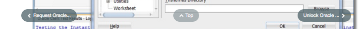
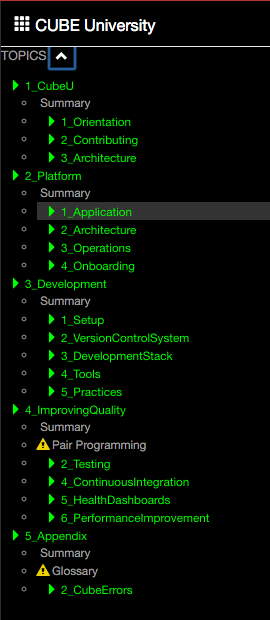
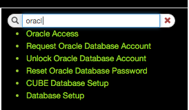

Contents
- Introduction
- Prerequisites
- Featured Courses
- Course Summary Page
- Content Page
- Hierarchy
- Search
- For Further Reading
Introduction
CubeU was designed to help you explore new topics and quickly find the answers you need to get problems resolved quickly. This section walks you through the various areas of the site.
The primary ways of getting to content are Featured Courses, Course Summary Pages, Content Pages, Hierarchy and Search.
Prerequisites
- Access to GAIG Enterprise GitHub and BUE/CubeU Repository.
Featured Courses
On the front page of CubeU, you will find a set of the more popular course sections links. This collection of sections will change as new sections are offered.
You can always return to this page by clicking on the house in the breadcrumb trail.

Course Summary Page
After selecting a course, you will be taken to a summary page containing sub-section and page links for that section.

Anytime you navigate to a new section or page, the content will be highlighted in the hierarchy to the left.
Content Page
Each content page follows a similar structure providing a brief introduction, any prerequisites, content and a list of "Further Reading" links at the bottom of the page.

Lets take a closer look at some of the navigational and convenience features on each page.
Breadcrumb Trail

In some websites, breadcrumb trails are used to provide a set of previously visited links. Since a web browser provides adequate capability for doing this already, CubeU is using breadcrumb trails for a different purpose.
At the top of the page, a breadcrumb trail provides a quick navigation up and down the hierarchy. Clicking on any section to the left of the selected topic allows you to quickly return to an upper hierarchy level. The text displayed is based on the directory or file name to provide a consistent naming with the item in the GitHub file hierarchy.
Distraction Free Mode
This icon toggles display of hierarchy and search sections.

Reading Time
 Estimated reading time is displayed for each non-summary page.
Estimated reading time is displayed for each non-summary page.
An average non-technical reading rate is an average of 275 wpm. CubeU calculates a rough reading time using a technical rate of 100 wpm. This time may be adjusted based on actual usage over time.
Page Status
 "Under Construction" pages are marked with a cautionary symbol.
"Under Construction" pages are marked with a cautionary symbol.
This symbol is also displayed in the content hierarchy. This symbol indicates that pages are not fully curated or some aspect of the page is under development. Once fully curated, this status should be changed in the page's FrontMatter section to remove this icon.
Edit Mode
 An edit button is displayed on non-Summary pages.
An edit button is displayed on non-Summary pages.
The Edit button takes you directly into GitHub to edit a content page. Such an edit button is only displayed when editing on your fork.
Always make sure that you are editing on the gh-pages branch. GitHub pages does not use the master branch.
Edit will not appear while running Jekyll from localhost as you are already editing within your IDE.
Edit will not appear on the main BUE/CubeU pages because you should not directly be making commits to the BASE repository and instead be using Pull Requests. If you want to correct a page from BUE, simply change the BUE in the URL to your fork's username and you will be taken to the equivalent page for editing.
TOC
For each page, a Table of Contents is generated from all the headings specified in a page's Markdown. The TOC provides context as to whether the page contains relevant material per your search and serving as a quick navigation option for larger pages. As a guideline, please attempt to keep the nesting level of headers to three levels so as to provide a compact TOC.
Page Sequence Navigation

When you scroll downwards a number of lines in a page, a set of buttons will appear near the bottom of the page.
If there is prior content in a sequence of content, a "previous" nav button containing the content title will appear on the left side of the page.
The center button will take you back to the top of the page.
If there is future content in a sequence of content, a "next" nav button containing the content title will appear on the right side of the page.
Hierarchy
At the heart of CubeU is the content hierarchy, where all content has been arranged in a (hopefully) logical taxonomy of material. This hierarchy reflects the structure of directories in the CubeU repository directories. Hierarchy is built from main topics, to summary sections, which contain individual content pages.
The values used in the Summary sections are based on each Page's "breadcrumb" FrontMatter text. The section headings are derived from the directory paths used in the GitHub directory path.
This hierarchy appears on the left hand side of your browser.

You can expand and collapse the whole hierarchy by clicking on the caret button at the top of the hierarchy. Individual subsections can be toggled opened and closed. Currently the site is set expand only the section that you have selected and close all other sections which you are not viewing.
When you select a topic from the breadcrumb trail, search or an internal link, the topics's section will be opened and the topics will be highlighted.

Any pages still "Under Construction" are displayed with cautionary symbol in the content hierarchy. This symbol is also displayed on the page itself.
Search

Search provides a very fast keyword based search capability based on Page Title, Author, Tags (keywords) and a 20 word excerpt of the page. Therefore it is critical to pay close attention to the values placed into these fields. Too many general tags will result in too many results for a given search. Too little will leave the content unfound.
Specify additional keywords in search to further refine the results.
Once you've found various results, you can quickly inspect the content by by navigating to the links in the search results. If not the desired result, the search results are maintained even when you switch pages in the hierarchy, breadcrumb trail or link from a given page.
For Further Reading
- None